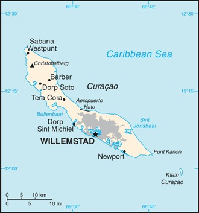
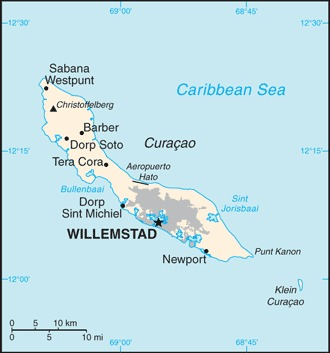

-
Introduction :: Curacao
-
Background:The original Arawak Indian settlers who arrived on the island from South America in about 1000, were largely enslaved by the Spanish early in the 16th century and forcibly relocated to other colonies where labor was needed. Curacao was seized by the Dutch from the Spanish in 1634. Once the center of the Caribbean slave trade, Curacao was hard hit economically by the abolition of slavery in 1863. Its prosperity (and that of neighboring Aruba) was restored in the early 20th century with the construction of the Isla Refineria to service the newly discovered Venezuelan oil fields. In 1954, Curacao and several other Dutch Caribbean possessions were reorganized as the Netherlands Antilles, part of the Kingdom of the Netherlands. In referenda in 2005 and 2009, the citizens of Curacao voted to become a self-governing country within the Kingdom of the Netherlands. The change in status became effective in October 2010 with the dissolution of the Netherlands Antilles.
-
Geography :: Curacao
-
Location:Caribbean, an island in the Caribbean Sea, 55 km off the coast of VenezuelaGeographic coordinates:
12 10 N, 69 00 W
Map references:Central America and the Caribbean
Area:total: 444 sq kmland: 444 sq kmwater: 0 sq kmcountry comparison to the world: 199Area - comparative:more than twice the size of Washington, DC
Land boundaries:0Coastline:364 kmMaritime claims:territorial sea: 12 nmexclusive economic zone: 200 nmClimate:tropical marine climate, ameliorated by northeast trade winds, results in mild temperatures; semiarid with average rainfall of 60 cm/year
Terrain:generally low, hilly terrain
Elevation:lowest point: Caribbean Sea 0 mhighest point: Mt. Christoffel 372 mNatural resources:calcium phosphates, aloes, sorghum, peanuts, vegetables, tropical fruit
Land use:agricultural land: 10% (2011 est.)arable land: 10% / permanent crops: 0% / permanent pasture: 0% (2011 est.)forest: 0% (2011 est.)other: 90% (2011 est.)Irrigated land:NAPopulation distribution:largest concentration on the island is Willemstad; smaller settlements near the coast can be found throughout the island, particularly in the northwestNatural hazards:Curacao is south of the Caribbean hurricane belt and is rarely threatened
Environment - current issues:problems in waste management that threaten environmental sustainability on the island include pollution of marine areas from domestic sewage, inadequate sewage treatment facilities, industrial effluents and agricultural runoff, the mismanagement of toxic substances, and ineffective regulations; the refinery in Sint Anna Bay, at the eastern edge of Willemstad’s large natural harbor, processes heavy crude oil from Venezuela; it has caused significant environmental damage to the surrounding area because of neglect and a lack of strict environmental controls; the release of noxious fumes and potentially hazardous particles causes schools downwind to regularly close
Geography - note:Curacao is a part of the Windward Islands (southern) group in the Lesser Antilles
-
People and Society :: Curacao
-
Population:151,345 (July 2020 est.)country comparison to the world: 187Nationality:noun: Curacaoanadjective: Curacaoan; DutchEthnic groups:Curacaoan 75.4%, Dutch 6%, Dominican 3.6%, Colombian 3%, Bonairean, Sint Eustatian, Saban 1.5%, Haitian 1.2%, Surinamese 1.2%, Venezuelan 1.1%, Aruban 1.1%, other 5%, unspecified 0.9% (2011 est.)Languages:Papiamento (official) (a creole language that is a mixture of Portuguese, Spanish, Dutch, English, and, to a lesser extent, French, as well as elements of African languages and the language of the Arawak) 79.9%, Dutch (official) 8.8%, Spanish 5.6%, English (official) 3.1%, other 2.9%, unspecified .3% (2001 census)note: data represent most spoken language in householdReligions:Roman Catholic 72.8%, Pentecostal 6.6%, Protestant 3.2%, Adventist 3%, Jehovah's Witness 2%, Evangelical 1.9%, other 3.8%, none 6%, unspecified 0.6% (2011 est.)Age structure:0-14 years: 19.68% (male 15,227/female 14,553)15-24 years: 13.38% (male 10,438/female 9,806)25-54 years: 36.55% (male 27,733/female 27,589)55-64 years: 13.88% (male 9,130/female 11,873)65 years and over: 16.52% (male 10,127/female 14,869) (2020 est.)population pyramid:
 The World Factbook Field Image ModalCentral America :: Curacao Print
The World Factbook Field Image ModalCentral America :: Curacao Print Image DescriptionThis is the population pyramid for Curacao. A population pyramid illustrates the age and sex structure of a country's population and may provide insights about political and social stability, as well as economic development. The population is distributed along the horizontal axis, with males shown on the left and females on the right. The male and female populations are broken down into 5-year age groups represented as horizontal bars along the vertical axis, with the youngest age groups at the bottom and the oldest at the top. The shape of the population pyramid gradually evolves over time based on fertility, mortality, and international migration trends.
Image DescriptionThis is the population pyramid for Curacao. A population pyramid illustrates the age and sex structure of a country's population and may provide insights about political and social stability, as well as economic development. The population is distributed along the horizontal axis, with males shown on the left and females on the right. The male and female populations are broken down into 5-year age groups represented as horizontal bars along the vertical axis, with the youngest age groups at the bottom and the oldest at the top. The shape of the population pyramid gradually evolves over time based on fertility, mortality, and international migration trends.
For additional information, please see the entry for Population pyramid on the Definitions and Notes page under the References tab.Dependency ratios:total dependency ratio: 55.9youth dependency ratio: 28.3elderly dependency ratio: 27.5potential support ratio: 3.6 (2020 est.)Median age:total: 36.7 yearsmale: 34.4 yearsfemale: 39.5 years (2020 est.)country comparison to the world: 77Population growth rate:0.35% (2020 est.)country comparison to the world: 167Birth rate:13.4 births/1,000 population (2020 est.)country comparison to the world: 138Death rate:8.7 deaths/1,000 population (2020 est.)country comparison to the world: 69Net migration rate:-1.3 migrant(s)/1,000 population (2020 est.)country comparison to the world: 147Population distribution:largest concentration on the island is Willemstad; smaller settlements near the coast can be found throughout the island, particularly in the northwestUrbanization:urban population: 89.1% of total population (2020) (2018)rate of urbanization: 0.62% annual rate of change (2015-20 est.) (2015-20 est.)total population growth rate v. urban population growth rate, 2000-2030: PDFMajor urban areas - population:144000 WILLEMSTAD (capital) (2018)Sex ratio:at birth: 1.05 male(s)/female0-14 years: 1.05 male(s)/female15-24 years: 1.06 male(s)/female25-54 years: 1.01 male(s)/female55-64 years: 0.77 male(s)/female65 years and over: 0.68 male(s)/femaletotal population: 0.92 male(s)/female (2020 est.)Infant mortality rate:total: 7 deaths/1,000 live birthsmale: 7.5 deaths/1,000 live birthsfemale: 6.5 deaths/1,000 live births (2020 est.)country comparison to the world: 159Life expectancy at birth:total population: 79 yearsmale: 76.6 yearsfemale: 81.4 years (2020 est.)country comparison to the world: 62Total fertility rate:2 children born/woman (2020 est.)country comparison to the world: 112Drinking water source:improved: total: 100% of populationunimproved: total: 0% of population (2017 est.)Sanitation facility access:improved: total: 100% of populationunimproved: total: 0% of population (2017)HIV/AIDS - adult prevalence rate:NAHIV/AIDS - people living with HIV/AIDS:NAHIV/AIDS - deaths:NAEducation expenditures:4.9% of GDP (2013)country comparison to the world: 63School life expectancy (primary to tertiary education):total: 17 yearsmale: 18 yearsfemale: 18 years (2013)Unemployment, youth ages 15-24:total: 29.3%male: 25.4% NAfemale: 34.5% NA (2018 est.)country comparison to the world: 36 -
Government :: Curacao
-
Country name:conventional long form: Country of Curacaoconventional short form: Curacaolocal long form: Land Curacao (Dutch); Pais Korsou (Papiamento)local short form: Curacao (Dutch); Korsou (Papiamento)former: Netherlands Antilles; Curacao and Dependenciesetymology: the most plausible name derivation is that the island was designated Isla de la Curacion (Spanish meaning "Island of the Cure" or "Island of Healing") or Ilha da Curacao (Portuguese meaning the same) to reflect the locale's function as a recovery stop for sick crewmenDependency status:
constituent country within the Kingdom of the Netherlands; full autonomy in internal affairs granted in 2010; Dutch Government responsible for defense and foreign affairs
Government type:parliamentary democracy
Capital:name: Willemstadgeographic coordinates: 12 06 N, 68 55 Wtime difference: UTC-4 (1 hour ahead of Washington, DC, during Standard Time)etymology - named after Prince William II of Orange (1626-1650), who served as stadtholder (Dutch head of state) from 1647 to 1650, shortly after the the Dutch captured Curacao from the Spanish in 1634Administrative divisions:none (part of the Kingdom of the Netherlands)
note: Curacao is one of four constituent countries of the Kingdom of the Netherlands; the other three are the Netherlands, Aruba, and Sint Maarten
Independence:none (part of the Kingdom of the Netherlands)
National holiday:King's Day (birthday of King WILLEM-ALEXANDER), 27 April (1967); note - King's or Queen's Day are observed on the ruling monarch's birthday; celebrated on 26 April if 27 April is a Sunday
Constitution:history: previous 1947, 1955; latest adopted 5 September 2010, entered into force 10 October 2010 (regulates governance of Curacao but is subordinate to the Charter for the Kingdom of the Netherlands); note - in October 2010, with the dissolution of the Netherlands Antilles, Curacao became a semi-autonomous entity within the Kingdom of the NetherlandsLegal system:based on Dutch civil law
Citizenship:see the NetherlandsSuffrage:18 years of age; universal
Executive branch:chief of state: King WILLEM-ALEXANDER of the Netherlands (since 30 April 2013); represented by Governor Lucille A. GEORGE-WOUT (since 4 November 2013)head of government: Prime Minister Ivar ASJES (since 7 June 2013)cabinet: Cabinet sworn-in by the governorelections/appointments: the monarch is hereditary; governor appointed by the monarch; following legislative elections, the leader of the majority party usually elected prime minister by the Parliament of Curacao; next election scheduled for 2016Legislative branch:description: unicameral Parliament of Curacao (21 seats; members directly elected by proportional representation vote to serve 4-year terms)elections: last held on 28 April 2017 (next to be held in 2021); early elections were held after Prime Minister Hensley KOEIMAN resigned on 12 February 2017, when the coalition government lost its majorityelection results: percent of vote by party - PAR 23.3%, MAN 20.4%, MFK 19.9%, KdnT 9.4%, PIN 5.3%, PS 5.1%, MP 4.9%, other 11.7%; seats by party - PAR 6, MAN 5, MFK 5, KdnT 2, PIN 1, PS 1, MP 1; composition - men 15, women 6, percent of women 28.6%Judicial branch:highest courts: Joint Court of Justice of Aruba, Curacao, Sint Maarten, and of Bonaire, Sint Eustatius and Saba or "Joint Court of Justice" (sits as a 3-judge panel); final appeals heard by the Supreme Court, in The Hague, Netherlandsjudge selection and term of office: Joint Court judges appointed by the monarch for lifesubordinate courts: first instance courts, appeals court; specialized courtsPolitical parties and leaders:Korsou di Nos Tur or KdnT [Amparo dos SANTOS]
Mayors for Liberec Region (Starostove pro Liberecky Kraj) or SLK [Martin PUTA]
Movementu Futuro Korsou or MFK [Gerrit SCHOTTE]
Movementu Progresivo or MP [Marylin MOSES]
Movishon Antia Nobo or MAN [Hensley KOEIMAN]
Partido Antia Restruktura or PAR [Eugene RHUGGENAATH]
Partido Inovashon Nashonal or PIN [Suzanne CAMELIA-ROMER]
Partido pa Adelanto I Inovashon Soshal or PAIS [Alex ROSARIA]
Partido Nashonal di Pueblo or PNP [Humphrey DAVELAAR]
Pueblo Soberano or PS
Un Korsou Hustu [Omayra LEEFLANG]International organization participation:Caricom (observer), FATF, ILO, ITU, UNESCO (associate), UPU
Diplomatic representation in the US:none (represented by the Kingdom of the Netherlands)Diplomatic representation from the US:chief of mission: Consul General Allen GREENBERG (since June 2019); note - also accredited to Aruba and Sint Maartentelephone: [599] (9) 4613066mailing address: P. O. Box 158, J.B. Gorsiraweg #1FAX: [599] (9) 4616489Flag description:on a blue field a horizontal yellow band somewhat below the center divides the flag into proportions of 5:1:2; two five-pointed white stars - the smaller above and to the left of the larger - appear in the canton; the blue of the upper and lower sections symbolizes the sky and sea respectively; yellow represents the sun; the stars symbolize Curacao and its uninhabited smaller sister island of Klein Curacao; the five star points signify the five continents from which Curacao's people deriveNational symbol(s):laraha (citrus tree); national colors: blue, yellow, whiteNational anthem:name: Himmo di Korsou (Anthem of Curacao)lyrics/music: Guillermo ROSARIO, Mae HENRIQUEZ, Enrique MULLER, Betty DORAN/Frater Candidus NOWENS, Errol "El Toro" COLINAnote: adapted 1978; the lyrics, originally written in 1899, were rewritten in 1978 to make them less colonial in nature
-
Economy :: Curacao
-
Economic overview:
Most of Curacao's GDP results from services. Tourism, petroleum refining and bunkering, offshore finance, and transportation and communications are the mainstays of this small island economy, which is closely tied to the outside world. Curacao has limited natural resources, poor soil, and inadequate water supplies, and budgetary problems complicate reform of the health and education systems. Although GDP grew only slightly during the past decade, Curacao enjoys a high per capita income and a well-developed infrastructure compared to other countries in the region.
Curacao has an excellent natural harbor that can accommodate large oil tankers, and the port of Willemstad hosts a free trade zone and a dry dock. Venezuelan state-owned oil company PdVSA, under a contract in effect until 2019, leases the single refinery on the island from the government, directly employing some 1,000 people. Most of the oil for the refinery is imported from Venezuela and most of the refined products are exported to the US and Asia. Almost all consumer and capital goods are imported, with the US, the Netherlands, and Venezuela being the major suppliers.
The government is attempting to diversify its industry and trade. Curacao is an Overseas Countries and Territories (OCT) of the European Union. Nationals of Curacao are citizens of the European Union, even though it is not a member. Based on its OCT status, products that originate in Curacao have preferential access to the EU and are exempt from import duties. Curacao is a beneficiary of the Caribbean Basin Initiative and, as a result, products originating in Curacao can be imported tax free into the US if at least 35% has been added to the value of these products in Curacao. The island has state-of-the-art information and communication technology connectivity with the rest of the world, including a Tier IV datacenter. With several direct satellite and submarine optic fiber cables, Curacao has one of the best Internet speeds and reliability in the Western Hemisphere.
GDP real growth rate:3.6% (2012 est.)2% (2011 est.)0.1% (2010 est.)country comparison to the world: 82Inflation rate (consumer prices):2.6% (2013 est.)2.8% (2012 est.)country comparison to the world: 130GDP (purchasing power parity) - real:$3.128 billion (2017 est.)$3.02 billion (2016 est.)$2.96 billion (2015 est.)note: data are in 2012 US dollarsGDP (official exchange rate):$5.6 billion (2012 est.)GDP - per capita (PPP):$15,000 (2004 est.)country comparison to the world: 93GDP - composition, by sector of origin:agriculture: 0.7% (2012 est.)industry: 15.5% (2012 est.)services: 83.8% (2012 est.)GDP - composition, by end use:household consumption: 66.9% (2016 est.)government consumption: 33.6% (2016 est.)investment in fixed capital: 19.4% (2016 est.)investment in inventories: 0% (2016 est.)exports of goods and services: 17.5% (2016 est.)imports of goods and services: -37.5% (2016 est.)Ease of Doing Business Index scores:Agriculture - products:aloe, sorghum, peanuts, vegetables, tropical fruitIndustries:tourism, petroleum refining, petroleum transshipment, light manufacturing, financial and business servicesIndustrial production growth rate:NALabor force:73,010 (2013)country comparison to the world: 184Labor force - by occupation:agriculture: 1.2%industry: 16.9%services: 81.8% (2008 est.)Unemployment rate:13% (2013 est.)9.8% (2011 est.)country comparison to the world: 168Taxes and other revenues:16.6% (of GDP) (2012 est.)country comparison to the world: 177Budget surplus (+) or deficit (-):-0.4% (of GDP) (2012 est.)country comparison to the world: 56Public debt:33.2% of GDP (2012 est.)40.6% of GDP (2011 est.)country comparison to the world: 158Current account balance:-$400 million (2011 est.)-$600 million (2010 est.)country comparison to the world: 116Exports:$839.7 million (2017 est.)$1.44 billion (2010 est.)country comparison to the world: 166Exports - commodities:petroleum productsImports:$540.3 billion (2018 est.)$453.8 billion (2017 est.)country comparison to the world: 13Imports - commodities:crude petroleum, food, manufacturesReserves of foreign exchange and gold:$0 (31 December 2017 est.)country comparison to the world: 191Exchange rates:Netherlands Antillean guilders (ANG) per US dollar -1.79 (2017 est.)1.79 (2016 est.)1.79 (2015 est.)1.79 (2014 est.)1.79 (2013 est.) -
Energy :: Curacao
-
Electricity access:electrification - total population: 100% (2020)Electricity - production:1.785 billion kWh (2012 est.)country comparison to the world: 139Electricity - consumption:968 million kWh (2008 est.)country comparison to the world: 156Electricity - exports:0 kWh (2009 est.)country comparison to the world: 125Electricity - imports:0 kWh (2009 est.)country comparison to the world: 139Crude oil - production:0 bbl/day (2017 est.)country comparison to the world: 125Crude oil - exports:0 bbl/day (2015 est.)country comparison to the world: 112Crude oil - imports:191,300 bbl/day (2015 est.)country comparison to the world: 31Crude oil - proved reserves:0 bbl (1 January 2011 est.)country comparison to the world: 121Refined petroleum products - production:189,800 bbl/day (2015 est.)country comparison to the world: 53Refined petroleum products - consumption:70,000 bbl/day (2016 est.)country comparison to the world: 93Refined petroleum products - exports:167,500 bbl/day (2015 est.)country comparison to the world: 33Refined petroleum products - imports:45,800 bbl/day (2015 est.)country comparison to the world: 85Natural gas - production:0 cu m (2009 est.)country comparison to the world: 121Natural gas - consumption:0 cu m (2009 est.)country comparison to the world: 137Natural gas - exports:0 cu m (2009 est.)country comparison to the world: 91Natural gas - imports:0 cu m (2009 est.)country comparison to the world: 114Natural gas - proved reserves:0 cu m (1 January 2011 est.)country comparison to the world: 126
-
Communications :: Curacao
-
Telephones - fixed lines:total subscriptions: 57,443subscriptions per 100 inhabitants: 38.09 (2019 est.)country comparison to the world: 155Telephones - mobile cellular:total subscriptions: 174,260subscriptions per 100 inhabitants: 115.55 (2019 est.)country comparison to the world: 186Telecommunication systems:general assessment: fully automatic modern telecommunications system; telecom sector across the Caribbean region continues to be one of the growth areas; given the lack of economic diversity in the region, with a high dependence on tourism and activities such as fisheries and offshore financial services the telecom sector contributes greatly to the GDP (2020)domestic: 39 per 100 users for fixed-line and 116 per 100 users for cellular-mobile, majority of the islanders have Internet; market revenue has been affected in recent quarters as a result of competition and regulatory measures on termination rates and roaming tariffs (2020)international: country code - +599, PCCS submarine cable system to US, Caribbean and Central and South America (2019)note: the COVID-19 outbreak is negatively impacting telecommunications production and supply chains globally; consumer spending on telecom devices and services has also slowed due to the pandemic's effect on economies worldwide; overall progress towards improvements in all facets of the telecom industry - mobile, fixed-line, broadband, submarine cable and satellite - has moderatedBroadcast media:government-run TeleCuracao operates a TV station and a radio station; 2 other privately owned TV stations and several privately owned radio stations (2019)Internet country code:
.cw
Internet users:total: 102,359percent of population: 68.13% (July 2018 est.)country comparison to the world: 179Broadband - fixed subscriptions:total: 51,836subscriptions per 100 inhabitants: 35 (2018 est.)country comparison to the world: 134 -
Transportation :: Curacao
-
National air transport system:number of registered air carriers: 2 (2020)inventory of registered aircraft operated by air carriers: 11Civil aircraft registration country code prefix:PJ (2016)Airports:1 (2020)country comparison to the world: 218Airports - with paved runways:total: 1 (2019)over 3,047 m: 1Roadways:total: 550 kmcountry comparison to the world: 193Merchant marine:total: 74by type: general cargo 9, oil tanker 1, other 64 (2019)country comparison to the world: 100Ports and terminals:major seaport(s): Willemstadoil terminal(s): Bullen Baai (Curacao Terminal)bulk cargo port(s): Fuik Bay (phosphate rock)
-
Military and Security :: Curacao
-
Military and security forces:no regular military forces; the Dutch Government controls foreign and defense policy; the Dutch Caribbean Coast Guard (DCCG) provides maritime security (2019)Military service age and obligation:no conscription (2010)Military - note:defense is the responsibility of the Kingdom of the Netherlands (2019)
Central America ::
Curacao